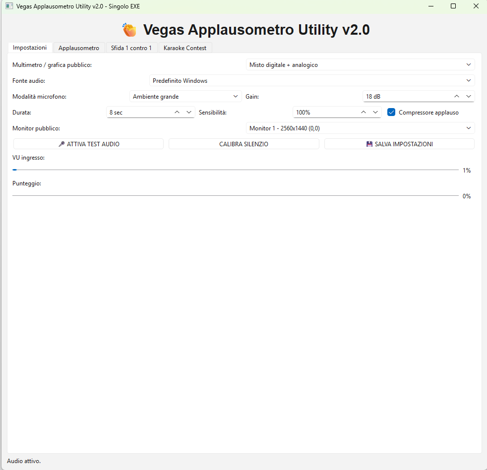
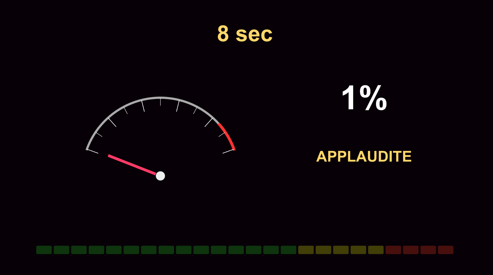

Utility live 2.2.0
Applausometro e Contest Live
Vegas Applausometro Utility v2.0 permette di creare giochi live, contest karaoke, sfide 1 contro 1 e misurazione degli applausi del pubblico con schermata dedicata.

Schermo pubblico per applausi
La grafica pubblica mostra countdown, percentuale, indicazione APPLAUDITE e barra colorata. Ideale per animazione, locali, feste e gare karaoke.

Funzioni per il live
Contest karaoke
Organizza gare e giochi durante la serata con un sistema visivo per il pubblico.
Sfida 1 contro 1
Modalità pensata per confrontare due cantanti o due squadre.
Fonte audio
Usa il dispositivo audio preferito e calibra silenzio, gain, sensibilità e compressore applauso.
Monitor pubblico
Invia la grafica dell'applausometro al monitor pubblico scelto.